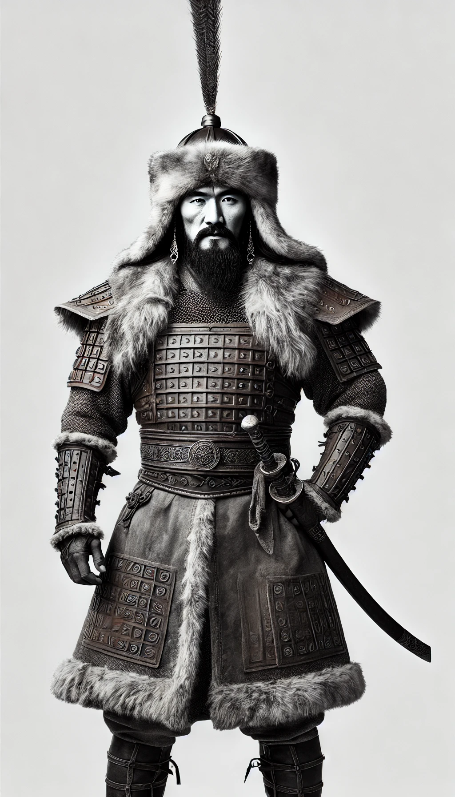

Early Life and Struggles
Born around 1162 in the Mongolian steppe, Genghis Khan, originally named Temujin, faced significant hardships from a young age. After his father's death, Temujin's family was left vulnerable and impoverished, ostracized by their clan. Surviving through hunting and foraging, Temujin grew resilient, developing an unbreakable determination to restore his family’s honor. The harsh conditions of his early life taught him critical survival skills and fostered a keen understanding of tribal alliances, setting the foundation for his rise to power. As he grew older, his strength, courage, and strategic mind started gaining attention, slowly propelling him into a position of influence among the tribes of Mongolia.
Rise to Power
Genghis Khan's path to supremacy began with a unification of the Mongol tribes, who had been divided and engaged in constant conflict for centuries. Through calculated alliances, battlefield victories, and a charismatic leadership style, he managed to bring together a coalition of tribes under his banner. His rise was marked by strategic marriages, relentless warfare, and loyalty-building gestures, which ultimately earned him the title of 'Genghis Khan,' or 'Universal Ruler.' This title not only reflected his dominance over the Mongolian tribes but also symbolized his ambition to conquer and unite all lands under a single empire.
Military Tactics and Strategies
As a military leader, Genghis Khan revolutionized warfare. His strategies were rooted in speed, discipline, and flexibility. Genghis Khan implemented a system of decimal organization, grouping his troops into units of tens, hundreds, thousands, and tens of thousands, which allowed for unparalleled control and coordination during battles. His troops were highly disciplined, moving swiftly across vast distances, often covering hundreds of miles in a matter of days to surprise enemies. Mastering psychological warfare, he would sometimes feign retreat to draw his enemies into traps, utilizing his mobility and knowledge of the terrain to his advantage. His army employed innovative tactics, such as using signal fires, flags, and drummers to relay orders across the battlefield, creating a sense of overwhelming power. His tactics set a standard that influenced future generations of military leaders.
Legacy of the Mongol Empire
Genghis Khan's impact extended far beyond his lifetime. At its peak, the Mongol Empire stretched from Eastern Europe to the shores of the Pacific Ocean, creating one of the largest contiguous empires in history. His legacy was not solely in conquest; he implemented laws that promoted trade, established diplomatic relations, and encouraged cultural exchange across his territories. The Mongol Empire served as a bridge between East and West, facilitating the transfer of knowledge, goods, and ideas across continents. The 'Pax Mongolica,' or 'Mongolian Peace,' allowed trade routes like the Silk Road to flourish, leading to an era of unprecedented economic and cultural prosperity. Genghis Khan's vision of an interconnected world continues to influence global history, symbolizing the transformative power of unity and ambition.